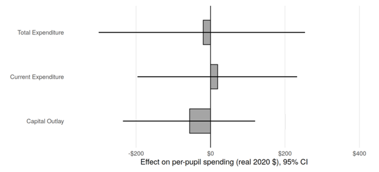
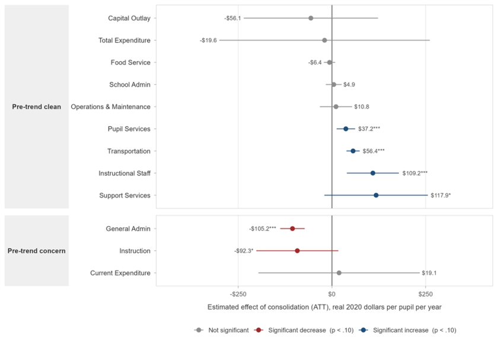
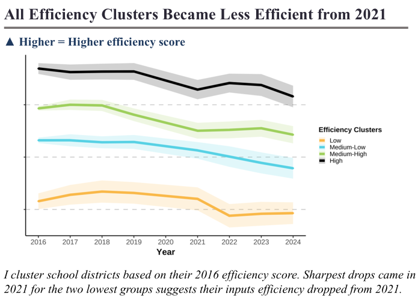
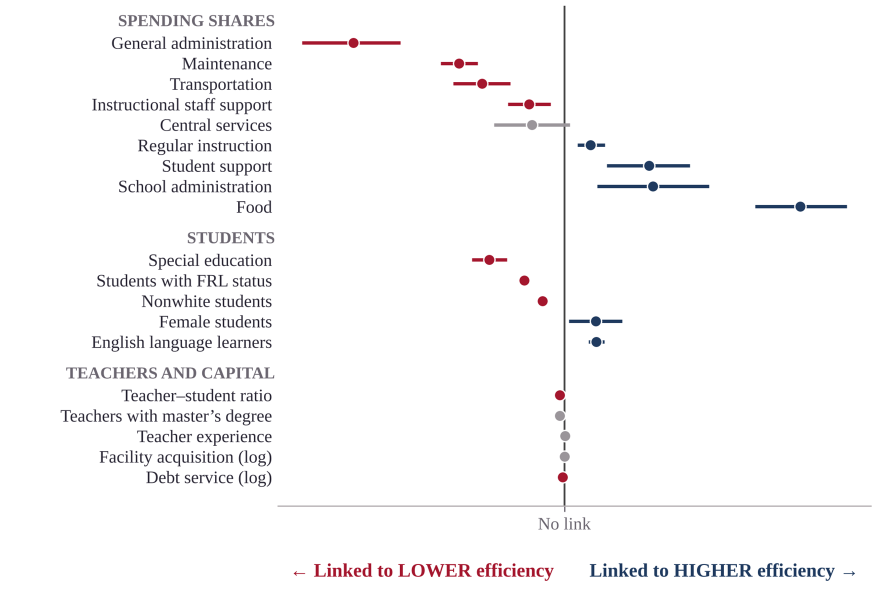

Sarker, M. J. A., Maranto, R., Haque, A., & Sagar, M. S. U. (2026). Social media impacts on Bangladeshi college students.
Job Market Paper
Job Market Paper
"When Small Districts Disappear: The Fiscal Effects of Arkansas’s Act 60 Consolidation Mandate"
Background. After the 2002 Lake View ruling declared Arkansas school funding inadequate and inequitable, Act 60 required districts with fewer than 350 students to merge by 2005, on the promise that larger districts would save money on administration. Through 2020, 85 districts merged away and 105 school campuses closed, mostly local high schools. The consolidated districts were mostly small, rural, and poor.
Design. I ask whether overall spending fell, where the money moved, and whether the fiscal effects lasted. Using a 21-year panel (2000–2020) of inflation-adjusted per-pupil expenditures, I compare 59 treated districts with 179 similar districts that never merged, using Gardner’s (2022) two-stage difference-in-differences estimator.
Findings. Consolidation produced no statistically significant change in total (−$20), current (+$19), or capital (−$56) spending per pupil. Beneath that, spending moved between categories. General administration fell by about $105 and instruction by about $92 (marginally significant), while instructional staff support rose by about $109, transportation by $56, and pupil services by $37. Administrative savings were offset by higher transportation and staff costs. Event-study estimates trace these effects over the 16 years after a merger. The administration and instruction estimates show marginal joint pre-trends, so causal claims for those categories require caution.
Presented at AEFP, SREE, and ABFM 2026.
Paper draft on request — sarker@uark.edu


Publications
Peer-Reviewed Journal Articles
Sarker, M. J. A., Hasan, M., Kabir, A., & Haque, A. (2025). Leveraging artificial intelligence to assess the impact of COVID-19 on the teacher-student relationship in higher education.
Hossain, M. T., Islam, M. A., Jahan, N., Nahar, M. T., Sarker, M. J. A., Rahman, M. M., et al. (2022). Mental health status of teachers during the second wave of the COVID-19 pandemic: A web-based study in Bangladesh.
Hossain, M. T., Ahammed, B., Jahan, N., Islam, M. A., Rahman, M. M., Khan, B., Sarker, M. J. A., et al. (2022). Prevalence and predictors of pornography exposure during the third wave of the COVID-19 pandemic: A web-based cross-sectional study on students in Bangladesh.
Book Chapters
Sarker, M. J. A. (2020). The readymade garment sector: Vulnerabilities and resilience.
Under Review
Sarker, M. J. A., Hasan, M., Kabir, A., Haque, A., & Hamja, A. A data-driven analysis of the education-employment linkage with explainable artificial intelligence.
Working Papers & Manuscripts in Preparation
Have a figure or 2–3 sentence summary for any of these? Send them my way and I'll drop them in — each card below has a spot ready for both.
Working Paper
"Merging for Efficiency? Causal Evidence from Arkansas School District Consolidation"
This paper asks how well Arkansas districts use their dollars. I compare each district with the most efficient Arkansas districts and ask what explains the differences. Similar student performance appears possible with about 26% fewer resources, though context matters. The gap began to widen in 2021, and all four efficiency clusters, defined by 2016 efficiency scores, were less efficient in 2024 than in 2016. Districts that devote a larger share of spending to general administration, maintenance, and transportation tend to be less efficient, while those that devote more to food, school administration, and student support tend to be more efficient. Districts serving more special education, low-income, and nonwhite students also tend to be less efficient, which may reflect the higher cost of meeting greater needs. These estimates are correlational, not causal.
Earlier versions presented at AEFP 50th Annual Conference (2025) and SREE 2025.




Add figure
assets/images/research/leadership-multiplier.png
assets/images/research/leadership-multiplier.png
Manuscript Drafted
"The Leadership Multiplier: How Leadership Shapes the Meaning of School Dollars"
[Add a 2–3 sentence summary of the approach and finding.]
Add figure
assets/images/research/literacy-gap.png
assets/images/research/literacy-gap.png
Manuscript Drafted
"Cannot Read a Word: Predictors of Non-Reading and the Literacy Gap in Rural Bangladesh"
[Add a 2–3 sentence summary of the approach and finding.]
Add figure
assets/images/research/licensure-exam.png
assets/images/research/licensure-exam.png
Working Paper
"If at First You Don't Succeed: The Impact of Failing the First Attempt on a Teacher Licensure Exam on Licensure, Employment, and Value-Added"
[Add a 2–3 sentence summary of the approach and finding.] Presented under evolving titles at AEFP 2024, SREE 2024, and APPAM 2024.
Add figure
assets/images/research/mobile-digital-gap.png
assets/images/research/mobile-digital-gap.png
Manuscript Drafted
"Stuck on Mobile: Device Access and the Gender Digital Skills Gap"
[Add a 2–3 sentence summary of the approach and finding.]
Add figure
assets/images/research/school-choice-meta.png
assets/images/research/school-choice-meta.png
In Progress
"The Impact of Private School Choice on Student Attainment around the Globe: A Meta-Analysis & Returns to Education Study"
Data analysis underway.
Add figure
assets/images/research/gifted-education-meta.png
assets/images/research/gifted-education-meta.png
Manuscript Drafted
"The Returns to Gifted Education: A Meta-Analysis of Academic and Long-Term Outcomes Across Research Designs"
[Add a 2–3 sentence summary of the approach and finding.]
Conference Presentations
- 2026 Sarker, M. J. A., & McGee, J. B. When small districts disappear: The fiscal consequences of consolidation in Arkansas. SREE 2026 Conference (Sept. 23–26).
- 2026 Sarker, M. J. A., & McGee, J. B. When small districts disappear: The fiscal consequences of consolidation in Arkansas. ABFM 38th Annual Research Conference, Washington, DC (Sept. 24–26).
- 2026 Sarker, M. J. A., & McGee, J. B. When small districts disappear: Fiscal consequences of consolidation in Arkansas. AEFP 51st Annual Conference, Chicago, IL.
- 2025 Sarker, M. J. A., & McGee, J. B. Measuring efficiency of school districts in Arkansas: A data-driven approach. SREE 2025 Conference.
- 2025 Sarker, M. J. A., & McGee, J. B. Assessing relative educational efficiency of Arkansas school districts using a modified Simar-Wilson two-stage DEA. AEFP 50th Annual Conference, Washington, DC.
- 2025 Sarker, M. J. A., & Maranto, R. Will social media contagion harm teens in non-Western societies? Experience of Bangladesh [Poster]. AEFP 50th Annual Conference, Washington, DC.
- 2024 McGee, J. B., Sarker, M. J. A., Zamarro, G., & Camp, A. If at first you don't succeed: The impact of failing the first attempt on a teacher licensure exam. APPAM Fall Research Conference, National Harbor, MD.
- 2024 McGee, J. B., Sarker, M. J. A., Zamarro, G., & Camp, A. Assessing the impact of teacher licensure exam scores on licensure, employment, and teaching effectiveness. SREE 2024 Conference.
- 2024 McGee, J. B., Sarker, M. J. A., Zamarro, G., & Camp, A. Assessing the relationship between teacher licensure exam scores and classroom effectiveness. AEFP 49th Annual Conference, Baltimore, MD.
Skills & Methods
Causal Inference RCTs · Regression Discontinuity (RDD) · Difference-in-Differences (DID) · Instrumental Variables (IV)
Quantitative Hierarchical Linear Modeling (HLM) · Structural Equation Modeling (SEM) · Machine Learning / Explainable AI · Data Envelopment Analysis (DEA) · Stochastic Frontier Analysis (SFA)
Programming Stata · R · Python
Field & Qualitative Survey design & field data collection · life history method · in-depth interviews · focus groups · key informant interviews